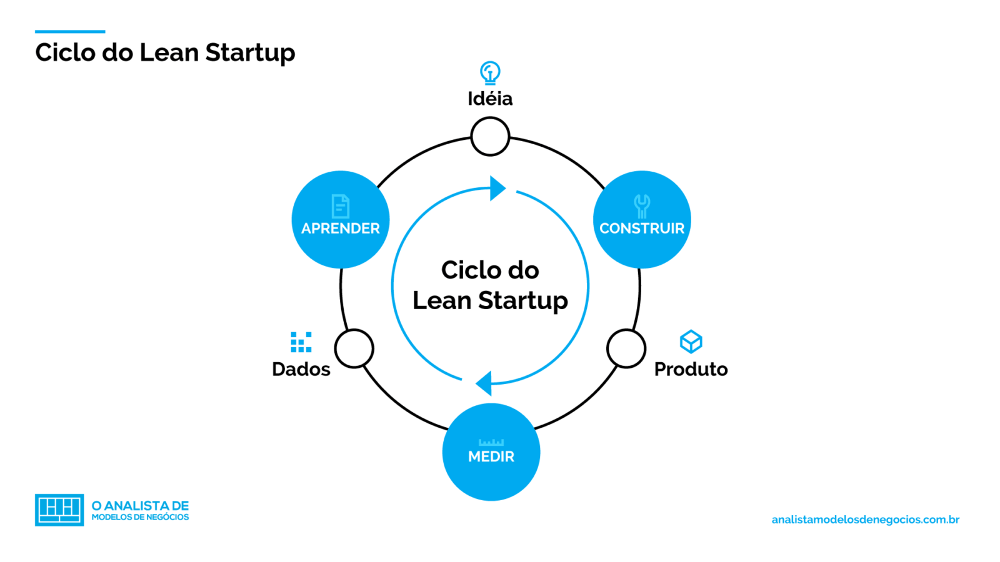

O que é?
Lean Startup é uma metodologia utilizada por empreendedores para aprimoramento e criação de produtos e serviços inovadores, utilizando a combinação de outras metodologias. O autor defende que a inovação contínua e sustentável não depende de uma ideia genial, mas sim de um processo correto, sendo que esse processo pode ser aprendido.
A Lean Startup adota 5 princípios:
-
Empreendedores estão por toda parte
A metodologia funciona para empresas de todos os tamanhos e setores -
Empreender é administrar
A startup é uma instituição e não o produto que ela cria, por isso requer um tipo de gestão apropriado para contexto de extrema incerteza -
Aprendizado validado
Startup existem para aprenderem como construir uma empresa sustentável. Essa aprendizagem precisa ser validada por meio de experimentos frequentes, possibilitando ao empreendedor testar cada elemento de sua visão de negócios. -
Construir/medir/apreender
Toda startup deve ser direcionada para acelerar esse ciclo de construir-medir-aprender. -
Contabilidade para inovação
Toda empresa deve adotar formas de medir o progresso, definir metas e critérios para priorizar atividades
Objetivo
Essa metologia tem como objetivo reduzir custos, riscos e tempo desenvolvimento na criação. Segundo Eric Reis criador da metologia, a Lean Startup mostra “como pensar e construir produtos e serviços inovadores, mas ainda assim mantendo a sustentabilidade financeira do negócio”.
Reis, ainda comenta que o surgimento dessa metologia veio após observar os mesmos erros comuns, cometidos por empresários no desenvolvimento de seus empreendimentos.
“Desde o começo, minha esperança foi encontrar maneiras de eliminar os inúmeros desperdícios que observava ao meu redor: startups que faziam produtos que ninguém queria, novos produtos retirados das prateleiras, incontáveis sonhos irrealizados.”
Como se aplica
A metodologia Lean Startup utiliza o ciclo de feedback para validar ideias, sendo um dos conceitos mais importantes da metodologia, esse ciclo tem três etapas: Construir-Medir-Aprender.
Construir
A primeira etapa é o desenvolvimento inicial do produto, mas ao invés de criar um produto muito complexo que provavelmente não irá vender muito, cria-se uma versão inicial chamada MVP. O MVP (minimum viable product) ou Produto Mínimo Viável é um protótipo. Feito para atender as cobranças dos clientes, gastando o mínimo de recursos e tempo. Com isso é possível testar hipóteses e começar o processo de aprendizagem.
Medir
Nessa fase a empresa deve medir de MVP desenvolvido valeu a pena ou não, e se esse produto vai adiante ou não. Normalmente são utilizados os feedbacks qualitativos e quantitativos dos usuários/clientes.
Aprender
A terceira fase a empresa, a partir dos resultados obtidos na etapa anterior, deve listar os aprendizados e decidir se o produto sera continuado ou não. Se a resposta for negativa, um novo ciclo deve ser iniciado.
Relação entre Lean Startup e o MVP
Como foi dito, o MVP é uma das etapas da metodologia Lean Startup, é a forma de testar produtos e serviços na Lean Startup. Os MVPs são essenciais para coletar feedback autêntico e continuo que mais tarde será transformado em aprendizado.
“É fácil se iludir a respeito do que você acredita que os clientes querem. Também é fácil aprender coisas que são totalmente irrelevantes. A aprendizagem validada é respaldada por dados empíricos coletados de clientes reais”
Por que o MVP é o método de desenvolvimento escolhido pela Lean Startup? Para construir um MVP no lugar de uma versão completa de um produto, um serviço e um desenvolvimento, tende a acelerar o ciclo de feedback continuo. Assim, pode comprovar a viabilidade ou inviabilidade de um negócio de forma rápida e com custos reduzidos.
Um produto mínimo viável aprimorado se traduzirá rapidamente em melhores resultados de negócios. Por exemplo, para aplicativos, onde irá gerar mais downloads, tempo de uso ou compras de produtos e serviços.
Os MVPs também são financeiramente mais sustentáveis do que os produtos desenvolvidos ao longo de muitos anos. Por ter sido feito com protótipos pequenos, os resultados também mostraram um bom retorno inicial do investimento.
Existem outras metodologias envolvidas com o Lean Startup
A Lean Startup utiliza um conjunto de outras metodologias, sendo a “manufatura enxuta” bastante presente, essa metodologia tem como objetivo reduzir os desperdícios do sistema de produção, garantir maior a qualidade dos produtos, diminuir o tempo de entrega dos produtos aos clientes, tendo menor números de defeitos.
Outra metodologia presente é a design thinking (pensar como um design), essa metodologia é uma abordagem humana e coletiva para gerar ideias, organizá-las e resolver problemas.
O desenvolvimento de clientes (customer development) é outra metodologia utilizada na Startup enxuta, essa metodologia defende que as funções de negocios e marketing de uma empresa devem ser considerada tão importante quanto as de engenharia e desenvolvimento de produto, por isso, merece uma metodologia rigorosa para orientá-las.
Diversas metodologias do desenvolvimento ágil estão presentes na Startup Enxuta, entre elas a extreme programming,scrum e kanban. O desenvolvimento ágil foca em ciclos curtos de desenvolvimento e comunicação eficiente entre os envolvidos no projeto.
Empresas que utilizam o método Lean Startup
Diversas empresas de tecnologia que se tornaram gigantes aplicaram a abordagem Lean Startup, como Amazon, Facebook, Dropbox, Grockit, Wealthfront, Votizen e Aardvark. Mas as startups brasileiras também utili o Lean Startup. Alguns de seus fundadores mencionaram aspectos importantes da abordagem em entrevistas aprofundadas no podcast Do Zero Ao Topo. Por exemplo, construindo hipóteses, experimentos e MVPs.
Primeira clínica do "Dr. Consulta" foi inaugurada em 2011 no bairro de Heliópolis. Se funcionar lá, vai funcionar em toda São Paulo. Se der certo em São Paulo, vai dar certo no Brasil”, disse o cofundador Thomaz Srougi.
Como diz Ries em seu livro, o Lean Startup não está sendo usado apenas por startups nos dias de hoje. Empresas estabelecidas ou mais tradicionais também podem aplicar essa abordagem ao testar novas áreas de atividade. É o caso da Stefanini.
Fundada em 1987, a empresa brasileira presta serviços de tecnologia da informação para 40 países, com faturamento de R$ 5 bilhões em 2021. Sua expansão internacional começou na Argentina em 1995. Fazer um MVP é o nosso estilo e é o estilo de todo o modelo digital. Você testa, vê se funciona e depois investe em mais”, disse Marco Stefanini, fundador e CEO da empresa.
A Stefanini acelerou sua expansão internacional nos anos 2000, começando pela América Latina e Estados Unidos. Cerca de 50% das vendas da Stefanini vêm de fora do Brasil.
“A startup enxuta, apoiada na sabedoria de muita experiência acumulada e experimentação no mundo real, vem para trazer um pouco de ciência ao que antes era pura arte e, utilizada em conjunto com outras metodologias e técnicas (Business Model Canvas, Customer Development, metodologias ágeis & implantação contínua), certamente irá reduzir o desperdício de talento e maximizar as chances de sucesso de nossos empreendedores atuais.”